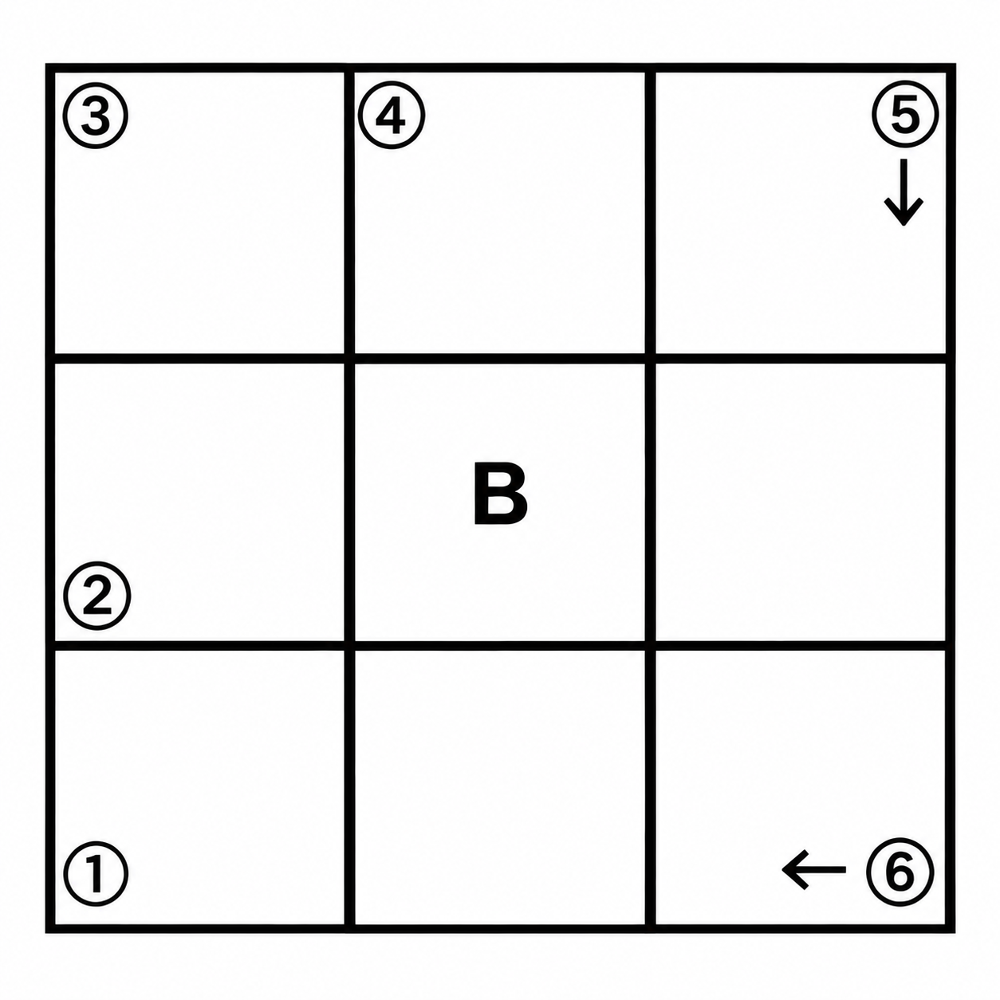
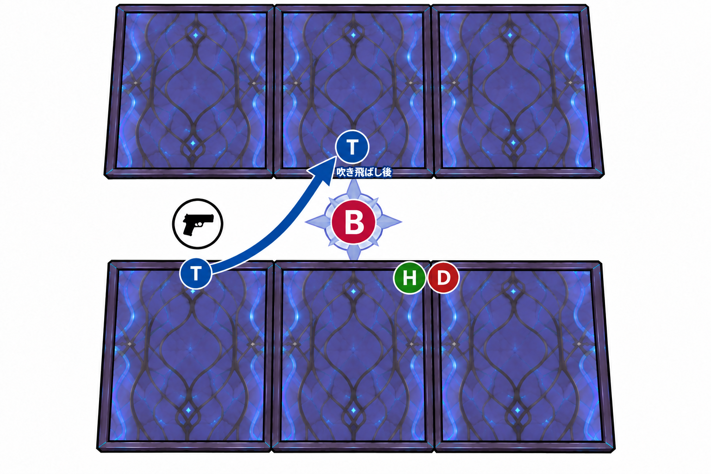
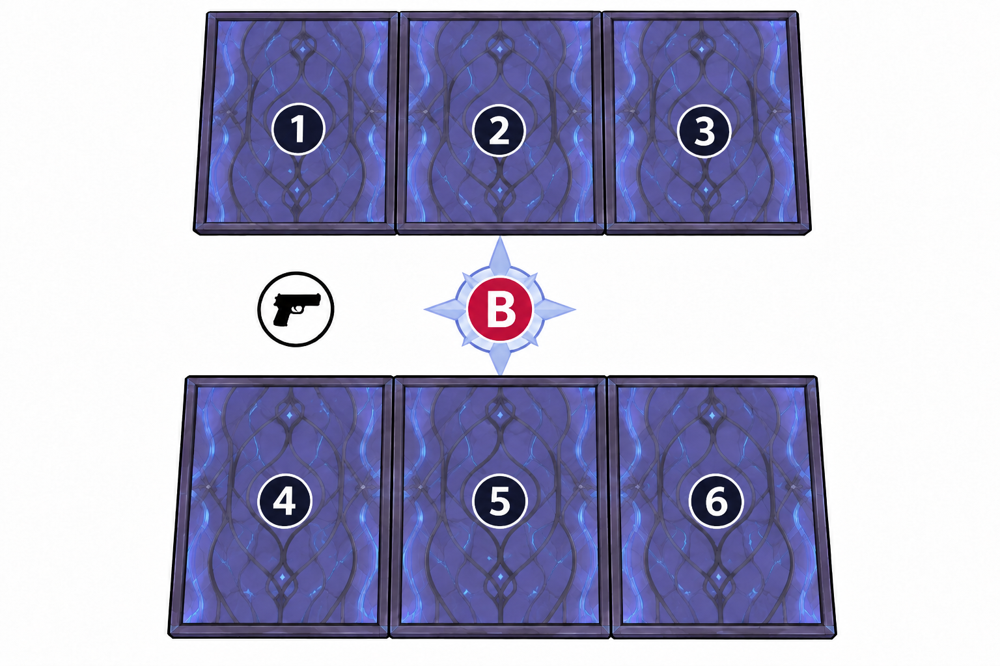
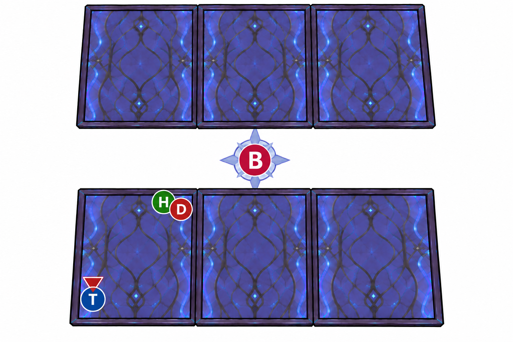
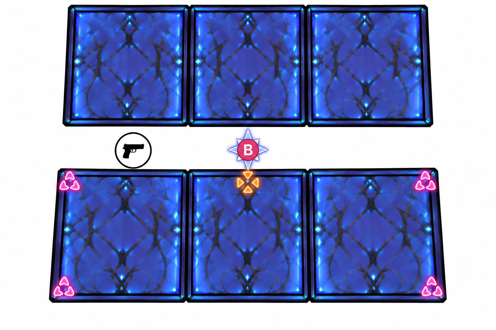
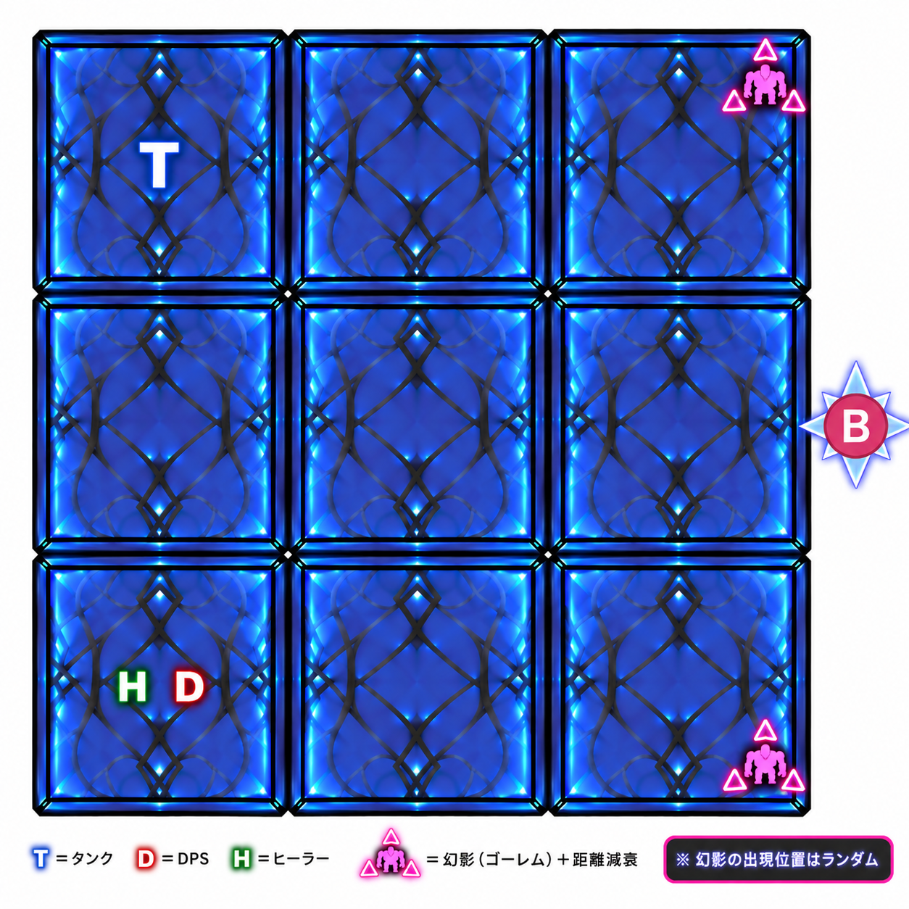

悖逆の機骸
ギルド「おふとん」用の攻略確認ページです。上のメニューから各レイドを選択してください。
悖逆の機骸-始
エリア移動
- エリアは時計回りに移動
- Tは奇数PINへボスを誘導
- 遠距離Dは偶数PINに集合
- 近接DとHはできるだけボスへ寄る

エリア移動タイミング
- 100 → 4PT
- 105 → 3PT
- 110 → 2PT
- 115 → 1PT
頭割り
- 回復阻害あり
- 重ねず、3～4人ずつに分かれて受ける
線AOE
- 線が付いた3人は紫オーブ上にAOEが重なるように立つ
- 線AOEが来たらオーブから離れる

ハード以降：オーブ4つ
台形に配置される球を三角形のAOEに収めるよう注意。
本体＋分身 距離減衰
1回目：ボスから離れる → 2回目：分身から離れる
悖逆の機骸・始【ナイトメア】
エリア移動
エリアは時計回りに移動します。
基本配置
- T：奇数PINへボスを誘導
- 遠距離D / H：偶数PINに集合
- 近接D / H：できるだけボスへ寄る
エリア移動タイミング
エリアゲージに応じて、各PTが順番に隣のエリアへ移動します。
- 100 → 4PT
- 105 → 3PT
- 110 → 2PT
- 115 → 1PT
壁を越える際に全体ダメージ＋デバフ付与の雑魚が出現します。
- 一斉に壁を越えず、PTごとに分かれて移動
- 移動後に出現した雑魚は集敵 → 処理
移動時の雑魚について
- プレイヤーに攻撃力低下デバフを付与
- こちらが与えるダメージを低下させるフィールドを展開
- フィールドを展開されると火力が大きく落ちるため、V型の行動を特に注意
雑魚はバラけさせず、しっかり集敵して処理してください。特にV型には中断を入れて、与ダメージ低下フィールドの展開を阻止しましょう。
頭割り
頭割りには回復阻害があります。
- 頭割り同士は重ねない
- 3～4人ずつに分かれて受ける
線AoE
線が付いた3人で紫オーブを処理します。
- 紫オーブの上にAoEが重なるように立つ
- 線AoEが来るタイミングでオーブから離れる
ハード以降
オーブが4つ出現します。
本体＋分身 距離減衰
距離減衰攻撃は時間差で2回連続で来ます。
- 1回目 → ボス本体から離れる
- 2回目 → 分身から離れる
1回目を処理したあとも、そのまま止まらず2回目の分身位置を確認してください。
ナイトメアでの注意点
ドーナツ3連
ドーナツ3連自体はノーマルから存在するギミックです。
ナイトメアでは、表示された予兆を見て安全地帯の順番を覚えておく必要があります。
- 最初に予兆をしっかり確認
- 安全地帯の順番を覚える
- 予兆が消えた後も、覚えた順番通りに移動して処理
HP0％以降
HP0％以降に、攻撃をひたすら回避する耐久時間があります。
討伐したと思って動きを止めず、最後まで回避を優先して気を抜かないようにしてください。
悖逆の機骸-継

床破壊攻撃
床破壊攻撃は、毎回前半2名 → 後半2名の順に対象になります。
1回目
- 前半2名 → ①PIN
- 後半2名 → ②PIN
2回目
- 前半2名 → ③PIN
- 後半2名 → ④PIN
床を節約する方法 ※非推奨
処理に余裕がある人は、巨大AoEの対象になった際、着弾タイミングに合わせてジャンプで一度床外へ出て戻ることで、余分な床を壊さずに処理できます。
ハード以降
- 後半2名は処理までの猶予時間が短くなるため注意！
ハード追加ギミック：広範囲距離減衰AoE
2名を対象とした広範囲の距離減衰攻撃です。
- 1名 → ⑤PIN
- 1名 → ⑥PIN
それぞれ指定PIN付近で離して処理してください。
ゴーレム処理
待機位置
- MT → ⑥PIN
- ST → ⑤PIN
- D/H → ⑥PIN集合
処理順
床が破壊される場合
- MT：⑥PIN位置から ← 左へ移動
- ST：⑤PIN位置から ↓ 下へ移動
悖逆の機骸-終
基本散開
- T：左手前（銃前）
- D/H：右手前
- 中央手前と右手前タイルの境目付近

オーブ吹き飛ばし
奥・手前それぞれに大きな玉が出現し、約1.5マス分の吹き飛ばし攻撃が発生します。落下しないように立ち位置を調整してください。
吹き飛ばされる方向
方向入力をしていない場合、玉がある位置とは逆サイドへ吹き飛ばされます。
対策
- 玉側へ寄る
- または玉と逆側の端まで逃げる
どちらかで落下を防ぎます。
距離減衰地雷
要所要所に挟まってくるギミックです。
通常は3人が対象。
※2回目は4人指定の可能性あり
対策
地雷は設置した瞬間には爆発しません。
対象者同士で多少重なってもいいので、確実に端まで運んで設置してから中央へ戻る。
レーザー照射
プレイヤーの頭上に数字が表示されます。
- 1組目：2名
- 2組目：2名
- 3組目：2名
それぞれ2人1組のグループになっていますが、各グループの2人のうち1人だけが正解のクリスタルに紐づいています。
難易度が上がるごとに、処理するグループが1つずつ追加されます。
一定時間後、安全地帯1マスを除いた各床パネルに持続致死ダメージが発生。安全地帯となる床は数秒おきに切り替わります。
処理順
- イージー：1組
- ハード：1組 → 2組
- ナイトメア：1組 → 2組 → 3組
それぞれ約2秒ずつ間隔を空けてクリスタルへアクセスしてください。
クリスタル処理・コール
対象者が自分で正解のクリスタルをインタラクトできた場合は、入力完了後にチャットで「k」とコールします。
対岸などに正解のクリスタルがあり、対象者本人がインタラクトできない場合は、以下の流れで処理します。
- ※図2参照で、正解のクリスタル番号を①～⑥でチャットにコール
- そのクリスタルの近くにいる人が代わりにインタラクト
- 入力できた人が「k」とコール

ハード以降
レーザー照射後にTバスターが来ます。
Tバスター時の立ち位置は、最後のテレポート先によって左右が変わるため注意。
- ボスがいる側：D/H
- ボスと反対側：T
TはD/Hから離れるようにボスと反対側の角へ移動し、Tバスターを処理してください。

時間停止
時間が停止し、その間に攻撃予兆が表示されます。表示された予兆を覚え、時間停止解除後に順番通り処理します。
出現する攻撃は以下の3種類です。
- 頭割り
- 距離減衰
- 単体AoE
頭上に表示されるピンク色の小さな時計が1周すると攻撃発生。
処理位置
- 頭割り：中央・ボス前で集合
- 距離減衰：4つ角へ散開
※Hはここでダメ減を使用 - 単体AoE：中央付近で散開

攻撃順
基本は、頭割り処理 → 終わり次第4方向へ散開 → 単体AoE処理という流れです。
運動会ギミック
床が6マス → 9マスに変化します。
ボスが右側へ移動し、右から左へ雷攻撃を行います。
※雷攻撃はジャスト回避可能
基本配置
- T：左上
- D/H：左下
基本はこの位置で雷攻撃を回避します。
HはTを回復するために中央列へ移動してもOKです。
ナイトメア
ナイトメアからはゴーレムの幻影が追加されます。ゴーレムは距離減衰攻撃を行うため、出現した位置からしっかり距離を取ります。
叩きつけ攻撃が終わったら運動会ギミック終了。

その他ギミック
青キューブ
青いキューブで床1面を指定してくる攻撃。指定された床から離れて回避します。
ランダム攻撃
以下のうちいずれか1種類がランダムで発生します。
- 頭割り
- 距離減衰
- 単体AoE
これらがメインギミックの合間にも挟まってくるため、各ギミック終了後も次の予兆を確認して対応してください。